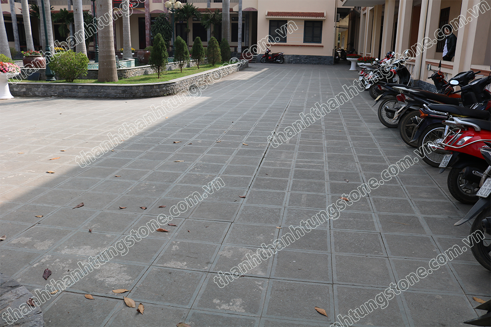
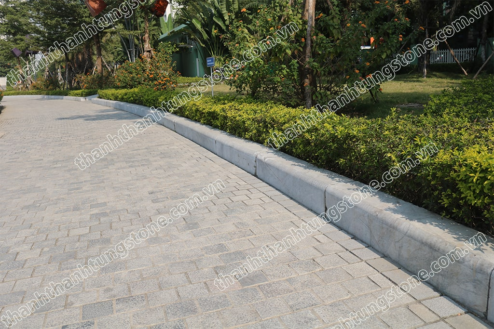
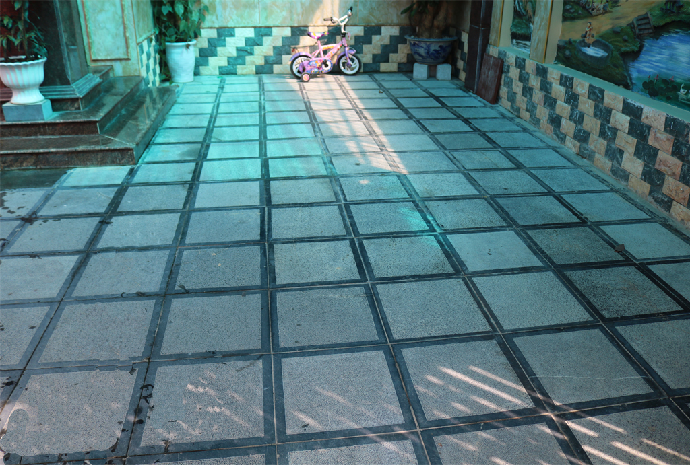
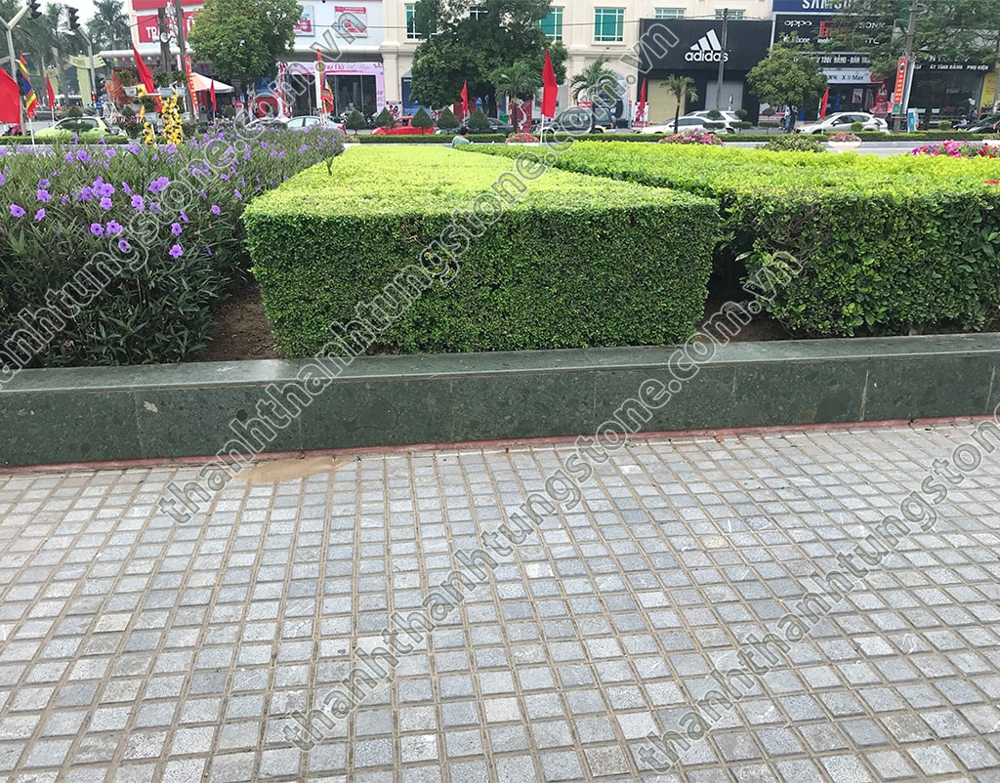
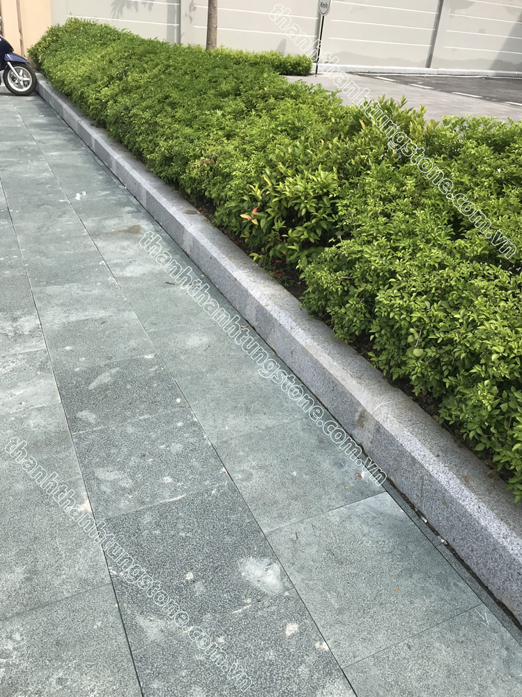

Đá Tự Nhiên Băm Mặt – Giải Pháp Lát Sân, Lối Đi Và Ngoại Thất Bền Đẹp, Chống Trơn Trượt
Trong các công trình ngoại thất hiện đại, việc lựa chọn vật liệu lát nền không chỉ cần đảm bảo tính thẩm mỹ mà còn phải đáp ứng yêu cầu về độ bền và an toàn khi sử dụng. Trong số nhiều loại vật liệu hiện nay, đá tự nhiên băm mặt được đánh giá là một trong những lựa chọn tối ưu nhờ khả năng chống trơn trượt, chịu lực tốt và vẻ đẹp mộc mạc, gần gũi với thiên nhiên.
Từ sân vườn, lối đi, vỉa hè, quảng trường đến khu vực hồ bơi hay khuôn viên biệt thự, đá băm mặt ngày càng được ứng dụng rộng rãi và trở thành xu hướng trong thiết kế cảnh quan ngoài trời.

Đá tự nhiên băm mặt là gì?
Đá tự nhiên băm mặt là loại đá được gia công bằng phương pháp băm cơ học hoặc băm thủ công trên bề mặt nhằm tạo độ nhám đồng đều. Sau quá trình xử lý, bề mặt đá xuất hiện nhiều điểm gồ nhẹ, giúp tăng độ ma sát và giảm nguy cơ trơn trượt khi di chuyển.
Nguồn nguyên liệu thường là các loại đá tự nhiên có độ cứng cao như đá granite, đá xanh, đá bazan hoặc đá ghi tự nhiên. Sau khi khai thác, đá được cắt theo kích thước tiêu chuẩn rồi gia công băm mặt để phù hợp với từng hạng mục công trình.

Ưu điểm nổi bật của đá tự nhiên băm mặt
Khả năng chống trơn trượt vượt trội
Đây là ưu điểm nổi bật nhất của đá băm mặt. Nhờ bề mặt nhám tự nhiên, loại đá này giúp tăng độ bám, hạn chế trơn trượt ngay cả khi trời mưa hoặc khu vực thường xuyên tiếp xúc với nước.
Chính vì vậy, đá băm mặt thường được lựa chọn cho sân vườn, lối đi, bậc tam cấp, hồ bơi và các khu vực công cộng có mật độ người qua lại cao.
Độ bền cao
Đá tự nhiên nổi tiếng với khả năng chịu lực và chống mài mòn tốt. Khi được sử dụng đúng mục đích và thi công đúng kỹ thuật, đá có thể duy trì chất lượng trong nhiều năm mà không bị cong vênh hay nứt vỡ như một số vật liệu khác.
Khả năng chịu được tác động của thời tiết cũng giúp đá phù hợp với điều kiện khí hậu nóng ẩm và mưa nhiều tại Việt Nam.
Tính thẩm mỹ tự nhiên
Không giống các vật liệu nhân tạo, mỗi viên đá đều sở hữu màu sắc và đường vân riêng biệt. Bề mặt băm tạo cảm giác mộc mạc nhưng vẫn sang trọng, dễ kết hợp với nhiều phong cách thiết kế từ truyền thống đến hiện đại.
Theo thời gian, đá vẫn giữ được vẻ đẹp tự nhiên và ít bị lỗi thời, góp phần nâng cao giá trị thẩm mỹ cho công trình.
Dễ bảo dưỡng
Đá băm mặt không yêu cầu quy trình bảo dưỡng phức tạp. Chỉ cần vệ sinh định kỳ, loại bỏ rong rêu và bụi bẩn, bề mặt đá sẽ luôn sạch đẹp. Nếu được xử lý chống thấm đúng cách, đá còn hạn chế bám bẩn và dễ vệ sinh hơn trong quá trình sử dụng.

Ứng dụng của đá tự nhiên băm mặt
Nhờ độ bền và khả năng chống trơn trượt, đá băm mặt được ứng dụng trong nhiều hạng mục khác nhau.
Lát sân vườn
Đây là ứng dụng phổ biến nhất. Bề mặt nhám giúp việc đi lại an toàn, đồng thời tạo nên không gian sân vườn gần gũi với thiên nhiên và hài hòa với cây xanh.
Lát lối đi
Đối với các khu nghỉ dưỡng, biệt thự, công viên hoặc khu dân cư, đá băm mặt mang đến lối đi chắc chắn, bền đẹp và ít phải bảo trì.
Ốp bậc tam cấp
Các bậc tam cấp thường xuyên tiếp xúc với mưa nắng nên rất cần vật liệu có độ bám cao. Đá băm mặt giúp giảm nguy cơ trượt ngã, đặc biệt đối với người lớn tuổi và trẻ nhỏ.
Khu vực hồ bơi
Đây là nơi thường xuyên có nước nên yêu cầu vật liệu chống trơn trượt tốt. Đá băm mặt đáp ứng hiệu quả tiêu chí này, đồng thời tạo vẻ đẹp sang trọng cho khu vực hồ bơi.
Quảng trường và vỉa hè
Nhiều công trình công cộng lựa chọn đá tự nhiên băm mặt nhờ khả năng chịu tải trọng lớn, chống mài mòn và duy trì vẻ đẹp trong thời gian dài.

Cách lựa chọn đá băm mặt phù hợp
Khi chọn mua đá tự nhiên băm mặt, bạn nên lưu ý một số yếu tố sau:
- Chọn loại đá có nguồn gốc rõ ràng.
- Kiểm tra độ đồng đều của bề mặt băm.
- Lựa chọn kích thước phù hợp với từng hạng mục.
- Quan sát màu sắc giữa các lô đá để đảm bảo tính đồng nhất.
- Ưu tiên đơn vị có kinh nghiệm trong gia công và thi công đá tự nhiên.
Việc lựa chọn đúng vật liệu sẽ giúp công trình đạt tính thẩm mỹ cao và hạn chế các chi phí sửa chữa về sau.

Hướng dẫn bảo quản đá tự nhiên băm mặt
Để duy trì độ bền và vẻ đẹp của đá, bạn nên:
- Quét dọn bụi bẩn thường xuyên.
- Loại bỏ rong rêu ngay khi xuất hiện.
- Sử dụng dung dịch vệ sinh có độ pH trung tính.
- Tránh hóa chất có tính axit mạnh vì có thể làm ảnh hưởng đến bề mặt đá.
- Kiểm tra và xử lý chống thấm định kỳ nếu công trình thường xuyên tiếp xúc với nước.
Việc bảo dưỡng đúng cách sẽ giúp đá luôn bền đẹp và giữ được màu sắc tự nhiên trong nhiều năm.

Thanh Thanh Tùng Stone – Đơn Vị Cung Cấp Đá Tự Nhiên Uy Tín
Nếu bạn đang tìm kiếm đá tự nhiên băm mặt chất lượng cho sân vườn, lối đi, hồ bơi hoặc các công trình ngoại thất, Thanh Thanh Tùng Stone là địa chỉ đáng tin cậy với nhiều năm kinh nghiệm trong lĩnh vực đá tự nhiên.
Chúng tôi cung cấp đa dạng mẫu đá băm mặt với nhiều kích thước, màu sắc và quy cách gia công, đáp ứng nhu cầu của cả công trình dân dụng và dự án quy mô lớn. Đội ngũ kỹ thuật giàu kinh nghiệm sẽ tư vấn giải pháp phù hợp, hỗ trợ lựa chọn vật liệu và thi công đúng kỹ thuật nhằm đảm bảo chất lượng và tính thẩm mỹ cho từng công trình.
Liên Hệ Thanh Thanh Tùng Stone
Để xem thêm các mẫu đá tự nhiên băm mặt và nhận báo giá chi tiết, vui lòng liên hệ với chúng tôi:
- 📞 Hotline: 097 929 8888
- 🌐 Website: https://thanhthanhtungstone.com
Thanh Thanh Tùng Stone luôn sẵn sàng đồng hành cùng bạn trong việc kiến tạo những không gian ngoại thất bền đẹp, an toàn và đẳng cấp.